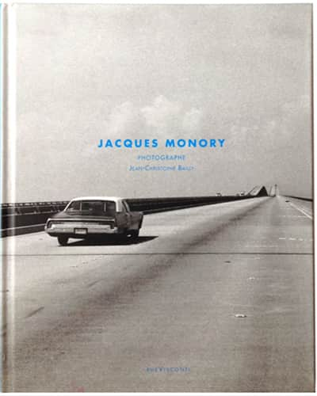
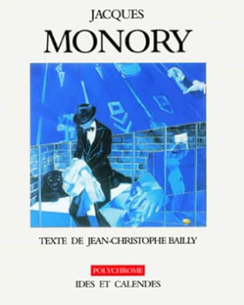
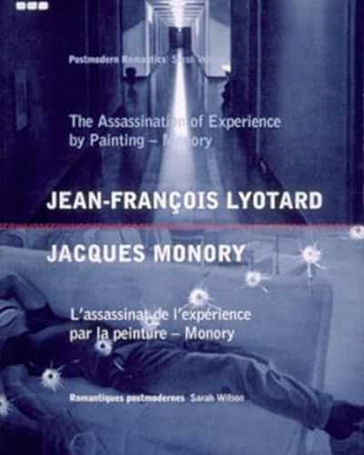
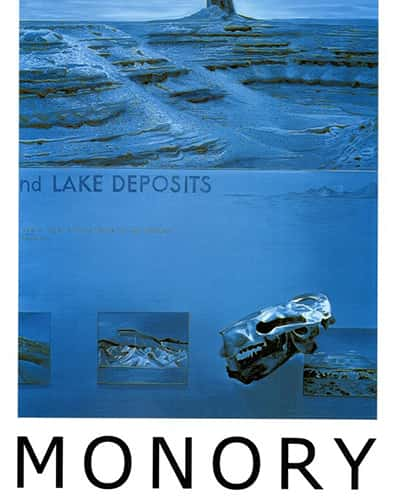
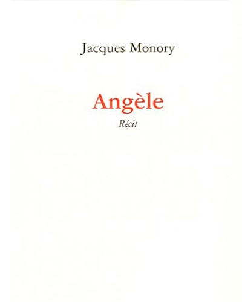
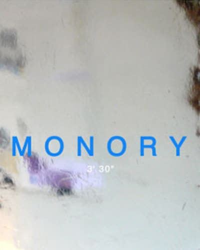
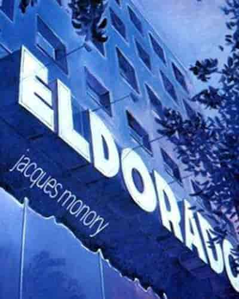
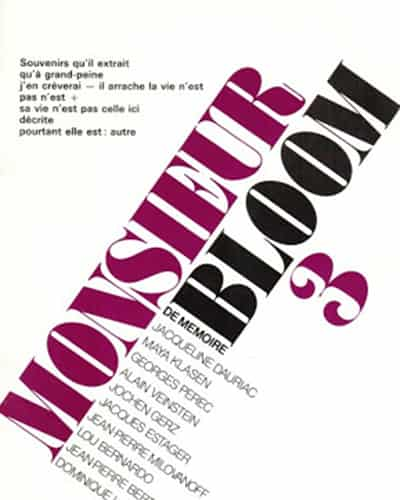

Monory, texte Bernard Vasseur, Editions Cercle d’Art, 2012

Jacques Monory photographe, texte Jean-Christophe Bailly, ruevisconti editions, 2011

Monory de Jean-Christophe Bailly, Édition Ides et Calendes, Suisse, 2000L'assassinat de l'expérience par la peinture-Monory, Jean-François Lyotard, Édition Castor Astral, 1984

Monory de Pierre Tilman, Édition Frédéric Loeb, 1992

Monory de Jean-Christophe Bailly, Édition Maeght, 1979
Fiction

Angèle, Éditions Galilée, Paris, 2005

3'30, Éditions Jannink, Paris, 1993

Eldorado, Édition Christian Bourgois, Paris, 1991

Quick, Éditions Monsieur Bloom, Paris, 1985Rien ne bouge assez vite au bord de la mort, avec Daniel Pommereulle, Éditions Pierre Bordas et fils, Paris, 1984